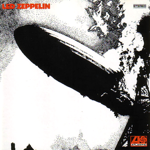
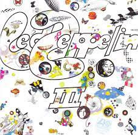
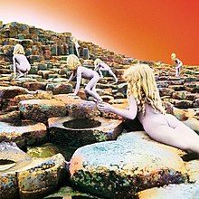
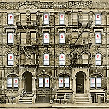
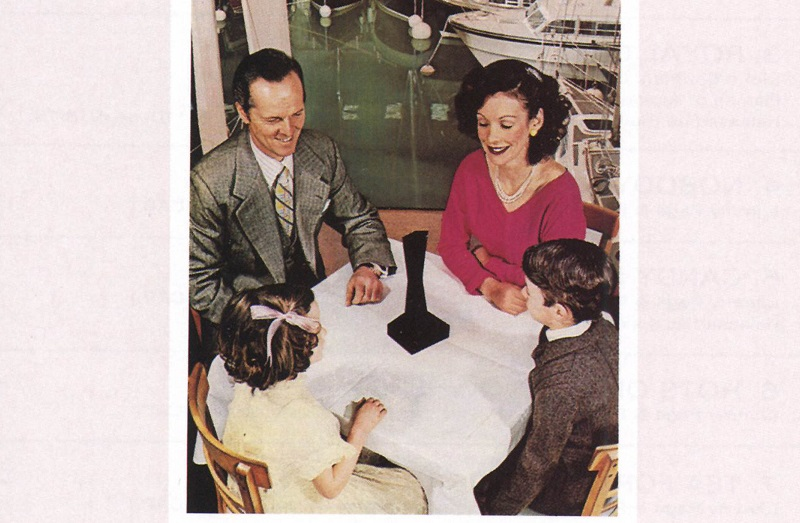
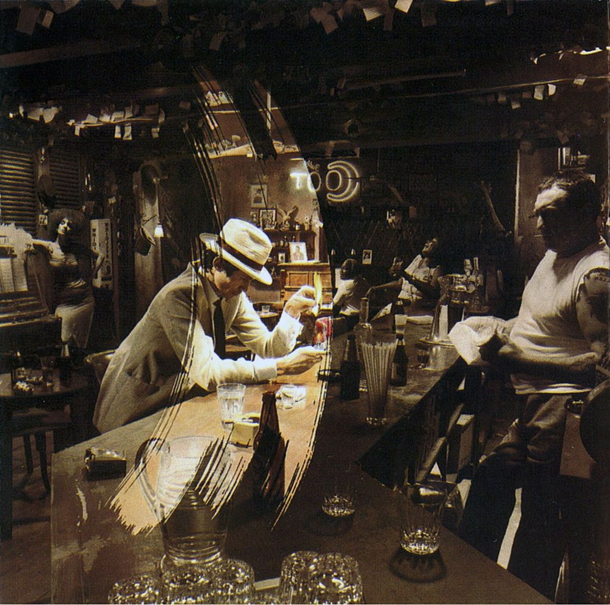
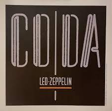

was an English rock band formed in London in 1968. The band consisted of guitarist Jimmy Page, singer Robert Plant, bassist and keyboardist John Paul Jones, and drummer John Bonham. They are widely considered to be one of the most influential bands in the history of rock music. The band's sound was a blend of blues, hard rock, and heavy metal, and their songs often featured intricate guitar riffs and powerful vocals from Plant. Some of their most popular songs include "Stairway to Heaven," "Whole Lotta Love," "Kashmir," and "Immigrant Song." Led Zeppelin released nine studio albums between 1969 and 1979, all of which were highly successful. Their fourth album, commonly referred to as "Led Zeppelin IV," is one of the best-selling albums of all time, with over 37 million copies sold worldwide. Despite their success, Led Zeppelin faced controversy throughout their career. Some critics accused them of stealing music from other artists without giving proper credit, and they faced accusations of promoting Satanism due to some of the imagery in their lyrics and album covers. The band disbanded in 1980 following the death of John Bonham, but their music continues to be influential to this day. They have been inducted into the Rock and Roll Hall of Fame and have received numerous other awards and honors.
| Title | Release Year | cover |
|---|---|---|
| Led Zeppelin | 1969 |  |
| Led Zeppelin II | 1969 |  |
| Led Zeppelin III | 1970 |  |
| Led Zeppelin IV | 1971 |  |
| Houses of the Holy | 1973 |  |
| Physical Graffiti | 1975 |  |
| Presence | 1976 |  |
| In Through the Out Door | 1979 |  |
| Coda | 1982 |  |